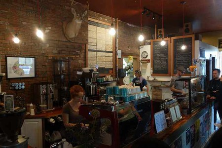
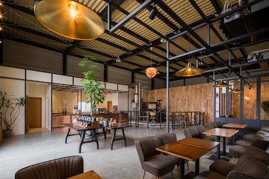
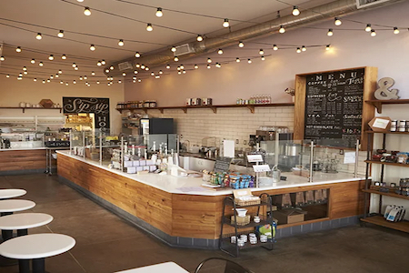
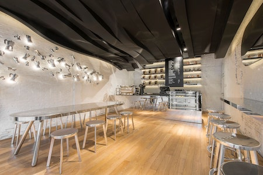

Gourmet Coffee Drinks and Pastries Now with 4 locations Across the Greater St. Louis Area!  Interior of our Delmar Loop location  Interior of our South County location  Interior of our West County location  Interior of our University City location Our favorite album all summer long!